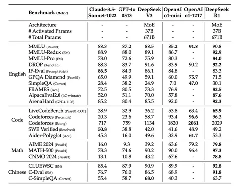
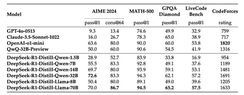
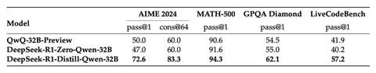

DeepSeek-R1 — опенсорсная модель, которая на равных конкурирует с o1 от OpenAI. Сегодня разберём технический отчёт её разработчиков.
Компания DeepSeek сделала ставку на RL. В качестве инита взяли DeepSeek-V3-Base и применили метод Group Relative Policy Optimization (GRPO). Система наград включала в себя две составляющие: accuracy reward и format reward. В задачах, связанных с математикой и программированием, получившаяся модель DeepSeek-R1-Zero выдаёт ответы, по качеству на бенчмарках сопоставимые с ответами OpenAI-01-0912.
Однако из-за accuracy reward модель стала тратить больше времени на раздумья. Кроме того, у DeepSeek-R1-Zero возникли способности к рефлексии (reflection) и саморазвитию (self-evolution). Это значит, что модель учится переосмыслять свои генерации и самостоятельно обнаруживать в них ошибки. Разработчики отмечают, что сами не ожидали такого.
Проблема DeepSeek-R1-Zero заключалась в том, что её ответы были трудночитаемыми — модель могла перескакивать с языка на язык в рамках одной генерации. К тому же, они могли быть очень большими — до 10 тысяч токенов. Плюс из отчёта не очень понятно, как модель показывает себя в задачах, не связанных с математикой и кодом.
Весь пайплайн создания финальной версии DeepSeek-R1 разделили на четыре этапа. Первый — Cold Start. В его рамках делали SFT, чтобы повысить читаемость (readability) генераций. В SFT-датасет входили в том числе ответы R1-Zero, исправленные людьми — как отметили в DeepSeek, это дало прирост качества по сравнению с R1-Zero.
Второй этап был аналогичен тому, как обучали R1-Zero, однако здесь к accuracy reward и format reward добавили language consistency reward, чтобы генерации были на одном языке. Качество ответов немного снизилось, однако они больше нравились людям-оценщикам.
Третий этап — Rejection Fine-Tuning. Авторы генерировали ответы на тщательно отобранный набор инструкций и отбирали лучшие, пользуясь, помимо прочего, генеративными наградами на основе DeepSeek-V3. Отсеивались ответы на нескольких языках, слишком длинные генерации и генерации, содержащие код. В итоге получилось 600 тысяч reasoning-примеров. SFT-датасет DeepSeek-V3 использовали как основу для не-reasoning данных, а для ответов на некоторые инструкции генерировали CoT и добавляли его перед ответом. Всего получилось 200 тысяч non-reasoning-примеров.
Последний этап — RLHF. Для reasoning-данных применялся тот же алгоритм, что и в R1-Zero. А для общих данных — стандартные reward-модели, которые оценивали полезность по краткому решению задачи и финальному ответу. А для оценки безвредности рассматривали весь ответ, включая процесс рассуждения.
Получившаяся версия DeepSeek-R1 выигрывает у o1-1217 в пяти из бенчмарках из 11 — в том числе, во всех математических (первая таблица).
В DeepSeek также взяли SFT с V3, сгенерировали ответы с помощью R1 и дистиллировали полученные данные в открытые модели. RL на них не производился. В результате, например, Qwen-7B стала сопоставима по качеству с GPT-4o-0513 (вторая таблица). Однако стоит учесть, что авторы статьи сообщают только о показателях в математических бенчмарках и бенчмарках, проверяющих способность к генерации кода.
В целом, исследование показало, что дистилляция даёт лучшие результаты, чем RL (третья таблица). Но и тут есть оговорка, потому что сравнивали дистилляцию из R1, а RL осуществляли методом, как у R1-Zero.
Авторам статьи не удалось извлечь пользу из метода Process Reward Model (PRM) на этапе обучения. Это было связано со сложностью определения шагов рассуждения их корректности, а также с проблемой «взлома наград».
Также в DeepSeek безуспешно пробовали использовать в обучении Monte Carlo Tree Search (MCTS), как в AlphaGo и AlphaZero. Здесь препятствием стало огромное пространство поиска, которое несравнимо больше, чем в случае с шахматами. Ограничение по top-k при этом приводит к локальному оптимуму. Кроме того, возникают сложности с обучением Value-модели. Тем не менее MCTS способен повысить качество на инференсе.
Разбор подготовил
Душный NLP
